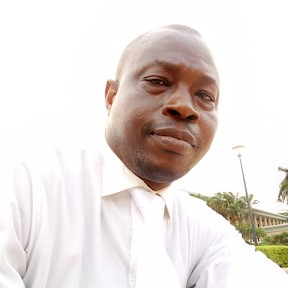

Solomon Taiwo Ojo | WDD 130

I am Ojo Solomon Taiwo. I am from Nigeria, I am married with Children. I have passion for learning and I enjoy shearing, I know my understanding of the Savior will be deepen even as we study together. I love the Church of Jesus Christ I am grateful for the BYU Pathway worldwide it is a tool to help us become better. I am so happy to have this wonderful opportunity to get to know you! all I am thrilled to have this opportunit,y as we study and learn more of Heavenly Father and His Son Jesus Christ.